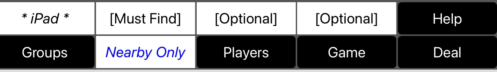

Help is organized as follows.
AnyCards provides a shared playing surface across devices and supplies a virtual deck of cards. By default, this is a standard 52 card deck but alternative decks can be selected by the initiating player.
The players use their separate devices to play a card game with the cards. Each player may optionally have a private hand. The game provides for an orderly succession of turns but does not otherwise build in the rules of any particular card game. It will support the playing of a wide variety of games (those that don't require non-card accessories such as chips).
Achieving agreement about what game to play, enforcing its rules, or incorporating interactions such as bidding, may require voice or message contact between players (not provided by the game).
At the top of the game screen you will see the following controls.
The four white labels in the top row list the players of the game. AnyCards may be played with any number of players between one (solitaire) and four.
Before the list of players has been assembled, the first label will contain your own name. If you have not yet established a name for yourself in the game settings, this name will be the name of your device. The fact that it represents you is indicated by the asterisks and italics. To set a meaningful name for yourself, touch Game, and fill in "Your User Name."
Depending on how you have set the minimum and maximum number of players, remaining player labels are set to [Must Find] (needed to meet the minimum) or [Optional] (above the minimum, below the maximum). If the maximum number of players is less than four, the excess labels are omitted.
After the list of players has been assembled (see Assembling Players), each player's chosen name (or device name is displayed). Your own name will appear (in italics with asterisks) but not necessarily first. The list represents the order of play, and the player in the first position must play first. The player whose turn is current is indicated by a green color. The number of players will be fixed for the remainder of the game.
You probably know already that this button brings up this help text.
This button opens a dialog that allows you to manage groups of players that can play games together without being "nearby." See Managing Groups.
This label states the name of the group with which you are currently playing. The special "nearby only" group consists of other players who are close by, are running AnyCards, and have agreed to let AnyCards use the local wifi to communicate. Other groups can contain remote players but must be created and joined as described in Managing Groups.
At the top of this help text is a link for reporting problems. Touching it will bring up an initialized email sending view with the recipient set to the AnyCards reporting address and some instructions in the body of the message (which you should delete and replace with your specific problem report).
You can use this capabiity to send any kind of commentary or input that you like, but a key purpose is to support reporting bugs and other problems that you are having with the app. To this end, the email, by default, contains up to two (often just one) logs of recent activity. When you are reporting a serious problem, such as a crash or misbehavior of some sort, it is a good idea to leave these logs in place since they help in diagnosing problems. They include only information about recent sequences of actions inside the app itself and do not include any personal information. However, if you feel more comfortable removing these logs you are free to do so.